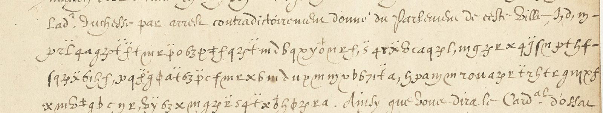
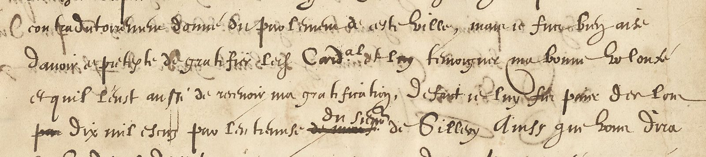

01 The documents
Philippe de Béthune, younger brother of Rosny (the future Sully), left for Rome with his instruction of 23 August 1601 (no. 2 of the volume) and served as ordinary ambassador until 1605. The letters of the King to him in fr. 3484 run from October 1601 to October 1602. They are the sent originals, signed Henry and countersigned de Neufville, that is Villeroy’s office, and the cipher is that office’s. Where the office in Rome deciphered a letter it wrote the reading in the margin, in a smaller hand, numbered 1, 2, 3 to the passages, or as a footnote keyed with a sign; the volume keeps those readings. Three letters have none.
| Letter | Folio | Cipher | Plaintext available |
|---|---|---|---|
| Paris, 8 Nov 1601 (no. 6) | 30v–31v | six passages, one to five lines | numbered marginal glosses, near-verbatim |
| Paris, 9 Nov 1601 (no. 7) | 33r | 22 lines, the whole body after “il me mande qu’il est certain que” | none |
| Paris, 10 Nov 1601 (no. 8) | 34r–v | four passages, 17 lines | the minute, f. 36r–v, in clear (the notice’s “copie du n° précédent”) |
| Saint-Germain, 22 Nov 1601 (no. 12) | 46r–47v | c. 40 lines in blocks | none; ff. 45 and 48 are address leaves |
| Paris, 10 Dec 1601 (no. 13) | 49v–50r | 5 + 9 lines | verbatim footnote on 49v, marginal glosses on 50r |
| 24 Dec 1601, Jan 1602 (nos. 14–17) | 53, 56–57 | blocks of 9–11 lines | marginal glosses |


02 The design
Bazeries (Les chiffres secrets dévoilés, 1901, pp. 28–29) prints the “chiffre baillé à M. de Béthune” of 1599, given to Maximilien for his mission to England. Each letter has a figure (A = 3, B = 10, C = 8 …) and two or three arbitrary symbols; thirty names are figures with two dots (Le Roy 4̈, Le Roy d’Espagne 2̈); some eighty common words are letters with a comma (a, ayant … y, et, z, nous), with one dot (entre … mons) or with two dots (nostre … selon), each series alphabetical; the figures 2 to 11 with a comma are tout, tant, toutesfois … vivs; a Δ doubles the preceding letter and y and $ cancel it. The 1601 cipher of the younger brother is the same office’s design two years on, with new values: f, = le, g, = la, x, = que, r, = par, q, = pour, d, = je in the comma series (the initials run l, l, q, p, p, j: alphabetical by groups, as in 1599); f: = au, s: = dit, x: = et, y: = ent in the two-dot series; t. = de, p. = ce with one dot; 61 = qui, 63 = re, 65 = si as syllable groups; 48 = Cardinal, 17 = Aldobrandin, 7 = le Roy d’Espagne as names; 68 = tout and 71 = tion are further syllable groups (toutes = 68 ȥ g, affectionne ends 71 g ȥ). The letters: e = ȥ ‡ ε 0; a = 4 6 u; i = hooked m, v, a, 1; o = f + t; t = q 7; u/v = ꝑ, y, c; s = g, 2-shaped r, n; r = r ∂; l = h B S; m = x; g = plain m, hooked u; c = b e; p = o T; b = n; y = a. And φ is not a letter but the doubling sign Bazeries describes in the 1599 key (“Δ doublera son prochain précédent”): somme is written s-o-m-φ-e, l’année l-a-n-φ-e-φ, Sillery has h-φ for ll, occasions o-c-φ, retrouve u-φ (u and v one letter), mienne mie-n-φ-e. The “gratification” of f. 34 is written x 6 ꞔu ∂ u p ꞔm m v b 6 7 1 f: m-a-g-r-a-t-i-f-i-c-a-t-i-o(n), with the figures 6 7 1 for a t i; the design’s figure-letters in the flesh.
03 The 10 November letter
The minute gives the enciphered passages word for word (differences: one word-sign where the minute has “de sorte”, “faites semblant” for the minute’s
“taschez qu’il n’en soit rien dit”). In the King’s voice: after the Parlement of Paris had given judgment in the Este–Aldobrandini debt, he “fus bien aise
d’avoir ce pretexte de gratifier led. Cardinal et luy tesmoigner ma bonne volonté … de sorte je luy fis payer des lors dix mil escuz par l’entremise du
sieur de Sillery”; he has now ordered “qu’il face payer aud. Cardinal dedans les premiers quatre mois de l’année prochaine la somme de dix mil escuz par les
mesmes mains … sans avoir esgard à l’arrest obtenu par lad. duchesse de Nemours, ny au besoing d’argent auquel je me retrouve. Car j’affectionne led.
Cardinal et desire m’acquitter de lad. promesse que je luy ay faicte”; Béthune, after conferring with Cardinal d’Ossat, is to let Cardinal Aldobrandini
know “de facon qu’il recoive et estime ceste grace comme elle merite”, to pretend “que vous n’aiez receu la presente”, and to be “le premier qui en avertira
led. Cardinal Aldobrandin”. Pietro Aldobrandini, the Pope’s nephew, had made the Peace of Lyon in January 1601; here is the King paying for it, and
managing how the gift is announced. The full text is in the repository (bethune/reading_10nov.md).
04 The 9 and 22 November letters, and where it stopped
The corpus of known plaintext (the 10 November pair, the six glossed passages of 8 November, the footnote passage of 10 December, about 900 symbols) was aligned by an EM procedure in which each symbol may stand for zero to twelve letters under a proper prior over strings, seeded with the values fixed by hand and allowing nulls only on the signs Bazeries’ design uses for them. The resulting P(letter | symbol) feeds two decoders on the 9 November leaf: a character 5-gram Viterbi trained on Berger de Xivrey’s Lettres missives de Henri IV (vols. III–V, the King’s own French), and a lexicon decoder that walks a trie of the same vocabulary through the emission alternatives. Both read about half of the words: et le [44] de la … cardinal … de leurs places qu’il … le premier … / … seront d’interest que [69] … partant vous en conférerez [avec] Aldobrandin le … / … de vous dire … qu’il a de telles pratiques et … / … jamais il m’avoit … proposé de rechercher le cardinal … / … comme sera la promo[tion] [71] au cardinalat de … Alexandre communiqu… / … les cardinaux de Joyeuse et d’Ossat … ensemble ce que vous aurez … / … Alexandre quelque instance que je ne face … / … de partir de ce premier de [62] … des raisons des dits car[dinaux]. A substance, not a reading.
A second pass re-read the 9 November leaf and the f. 34 corpus symbol by symbol at four times magnification. It fixed the doubling sign, the syllable groups, ꝑ = u/v and a dozen letters on words of the minute, and lifted the 9 November reading to about six words in ten: …sera la promotion au cardinalat … Alexandre … ensemble ce que vous aurez … jamais il m’avoit dit … propos de rechercher le cardinal … en telle occasion l’asseurant que … de vous dire la res[olution] … de telles pratiques … je me remects de re[pr]endre … des advis desdits car[dinaux]. The letter is about the Spanish pressure over Don Alexandre’s cardinalate and the cardinals’ advice, not the military news the clear opening suggested.
What still stops it is in the hand, not the method. Three glyph families the eye does not separate reliably carry two values each: an open-tailed and a looped g (n and s), three m-shapes (g, d, f), and r against the 2-shaped r (r and s); the model learned on merged classes plateaus where the merges are. And the two-digit names that carry the letter’s substance (44, 45, 62, 66, 67, 69, 72, 26–28) occur only in the undeciphered letters. The glosses of ff. 53 and 56–57 name their referents (the Duke of Modena, the Archduke, the King of Spain’s want of money, Fuentes); those leaves are now on disk at full resolution and cut, their cipher not yet transcribed. The 22 November letter, forty lines in blocks, awaits the same key. This is a partial reading with a known remainder, not a dead end.
05 Sources
- BnF, Département des Manuscrits, Français 3484, Recueil de lettres et de pièces originales (Henri IV to Béthune, 1599–1602), Gallica ark:/12148/btv1b52523722c; canvas = 2 × folio + 7 for a recto.
- É. Bazeries, Les chiffres secrets dévoilés (Paris, 1901), pp. 28–29, “Chiffre baillé à M. de Béthune, 1599”, Gallica bpt6k325768q.
- Berger de Xivrey and Guadet, Recueil des lettres missives de Henri IV, vols. III–V (1846–50), archive.org, as language model; vol. V has no Béthune letter for November 1601.
- S. Tomokiyo, “Ciphers during the reign of Henri IV”: Béthune’s ciphers of fr. 15975 (1602–05) and fr. 15972 (1606–08) are other keys.
- Working files in
bethune/:NOTES.md,corpus.txt,key.tsv,reading_10nov.md,ct_f33.txt,em_align.py,decode.py,worddecode.py,decode_f33.txt.